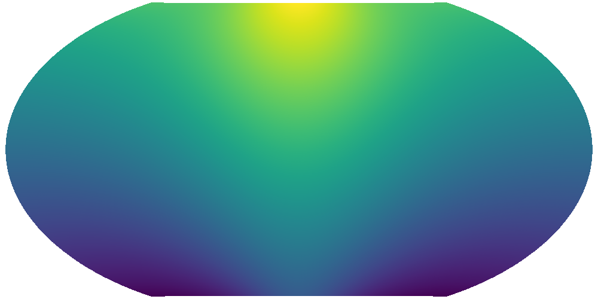
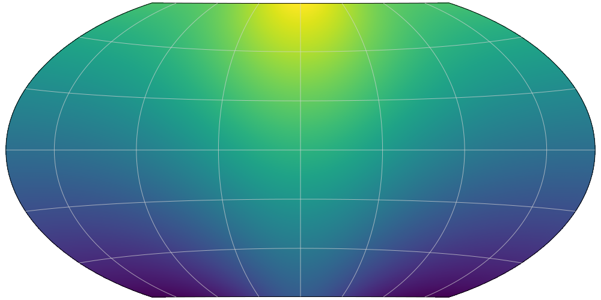
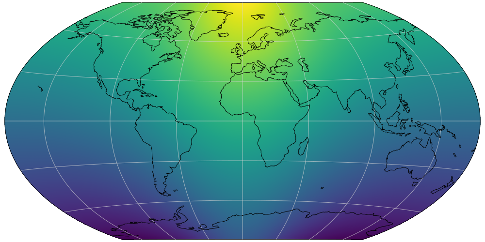

Example usage
This is a small example which demonstrates how to use GeoMakie. We go through the basic setup of a plot, and explore the different options which are available for plotting.
It helps to think of GeoMakie not as a fully featured, all-in-one solution like Cartopy is; instead, it is simply a collection of utilities which make creating geographical plots easier.
We'll begin by simulating a field across the Earth:
using GeoMakie
lons = LinRange(-179.5, 179.5, 360)
lats = LinRange(-89.5, 89.5, 180)
field = [exp(cosd(l)) + 3(y/90) for l in lons, y in lats]360×180 Array{Float64,2}:
-2.61544 -2.58211 -2.54877 … 3.25123 3.28456 3.31789 3.35123
-2.61533 -2.58199 -2.54866 3.25134 3.28467 3.31801 3.35134
-2.6151 -2.58177 -2.54844 3.25156 3.2849 3.31823 3.35156
-2.61477 -2.58143 -2.5481 3.2519 3.28523 3.31857 3.3519
-2.61432 -2.58098 -2.54765 3.25235 3.28568 3.31902 3.35235
-2.61376 -2.58042 -2.54709 … 3.25291 3.28624 3.31958 3.35291
-2.61308 -2.57975 -2.54641 3.25359 3.28692 3.32025 3.35359
-2.61229 -2.57896 -2.54563 3.25437 3.28771 3.32104 3.35437
-2.61139 -2.57806 -2.54472 3.25528 3.28861 3.32194 3.35528
-2.61037 -2.57704 -2.54371 3.25629 3.28963 3.32296 3.35629
⋮ ⋱
-2.61139 -2.57806 -2.54472 3.25528 3.28861 3.32194 3.35528
-2.61229 -2.57896 -2.54563 3.25437 3.28771 3.32104 3.35437
-2.61308 -2.57975 -2.54641 3.25359 3.28692 3.32025 3.35359
-2.61376 -2.58042 -2.54709 3.25291 3.28624 3.31958 3.35291
-2.61432 -2.58098 -2.54765 … 3.25235 3.28568 3.31902 3.35235
-2.61477 -2.58143 -2.5481 3.2519 3.28523 3.31857 3.3519
-2.6151 -2.58177 -2.54844 3.25156 3.2849 3.31823 3.35156
-2.61533 -2.58199 -2.54866 3.25134 3.28467 3.31801 3.35134
-2.61544 -2.58211 -2.54877 3.25123 3.28456 3.31789 3.35123Presumably, you won't want to use the boring old Plate-Carrée projection. Fortunately, GeoMakie provides several convenience constructors, and you can use Proj4.jl to construct arbitrary projections.
source, dest = LonLat(), WinkelTripel()(Projection("+proj=longlat +datum=WGS84 +ellps=WGS84 +towgs84=0,0,0"), Projection("+proj=wintri +lon_0=0 +lat_1=0 +x_0=0 +y_0=0 +units=m +ellps=GRS80"))There are two main entry points to plot a field. If you're using the GLMakie backend (which is the default, but does require a GPU), then you have the option of using surface or mesh; however, if you're using the CairoMakie backend (which does not require a GPU), then you can only use mesh.
We'll cover the surface method first.
xs, ys = xygrid(lons, lats)
Proj4.transform!(source, dest, vec(xs), vec(ys))
scene = surface(xs, ys; color = field, shading = false, show_axis = false, scale_plot = false)
This is a basic field over the Earth!
Now, we can make this a bit more interpretable by adding an axis:
geoaxis!(scene, extrema(lons), extrema(lats); crs = (src = source, dest = dest,))
GeoMakie also ships a low-resolution coastline file from Natural Earth, which is conveniently exposed by the coastlines function:
coastlines!(scene; crs = (src = source, dest = dest,))
That's the surface API done. Now, we can go a little lower-level into the mesh function, which can be used whether you have a GPU or not.
To create a mesh, we need to create a triangulation scheme. This is very easy for a regular grid (made up of regular, rectangular cells), and there is a convenience function to do this in GeoMakie:
points, faces = GeoMakie.triangulated_grid(lons, lats)(GeometryBasics.Point{2,Float32}[[-179.5, -89.5], [-179.5, -88.5], [-179.5, -87.5], [-179.5, -86.5], [-179.5, -85.5], [-179.5, -84.5], [-179.5, -83.5], [-179.5, -82.5], [-179.5, -81.5], [-179.5, -80.5] … [179.5, 80.5], [179.5, 81.5], [179.5, 82.5], [179.5, 83.5], [179.5, 84.5], [179.5, 85.5], [179.5, 86.5], [179.5, 87.5], [179.5, 88.5], [179.5, 89.5]], [1 2 362; 1 361 362; … ; 64439 64440 64800; 64439 64799 64800])This returns a vector of points as vertices of a grid, and a matrix of triangle faces.
We can now transform our points into the target coordinate space:
tpoints = Proj4.transform.(source, dest, points)64800-element Array{GeometryBasics.Point{2,Float32},1}:
[-1.007835e7, -9.990612e6]
[-1.0253163e7, -9.933184e6]
[-1.0427879e7, -9.874231e6]
[-1.0602445e7, -9.813754e6]
[-1.0776808e7, -9.751755e6]
[-1.0950915e7, -9.688236e6]
[-1.1124712e7, -9.6232e6]
[-1.1298148e7, -9.55665e6]
[-1.1471169e7, -9.48859e6]
[-1.1643722e7, -9.419022e6]
⋮
[1.1471169e7, 9.48859e6]
[1.1298148e7, 9.55665e6]
[1.1124712e7, 9.6232e6]
[1.0950915e7, 9.688236e6]
[1.0776808e7, 9.751755e6]
[1.0602445e7, 9.813754e6]
[1.0427879e7, 9.874231e6]
[1.0253163e7, 9.933184e6]
[1.007835e7, 9.990612e6] and plot them as a mesh:
scene = mesh(
tpoints, faces;
color = GeoMakie.img2colorvec(field),
shading = false,
show_axis = false, scale_plot = false, # don't show the normal axis and
# ensure the aspect ratio is correct
resolution = (1000, 500) # just a nice resolution for this projection
)Now, we can add the geoaxis and coastlines:
geoaxis!(scene, extrema(lons), extrema(lats); crs = (src = source, dest = dest,))
coastlines!(scene; crs = (src = source, dest = dest,))and we're done!
Using the CairoMakie backend, you can output to vector formats like SVG and PDF. However, be warned - these files can become quite large! Even a small example like this yields a 3 MB SVG, and a 20 MB PDF.